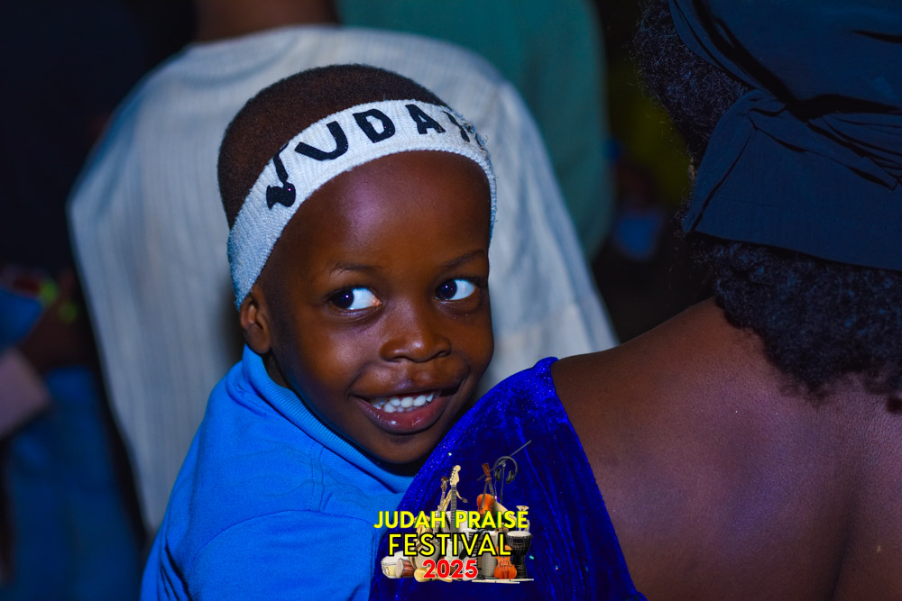
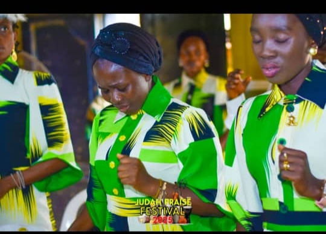
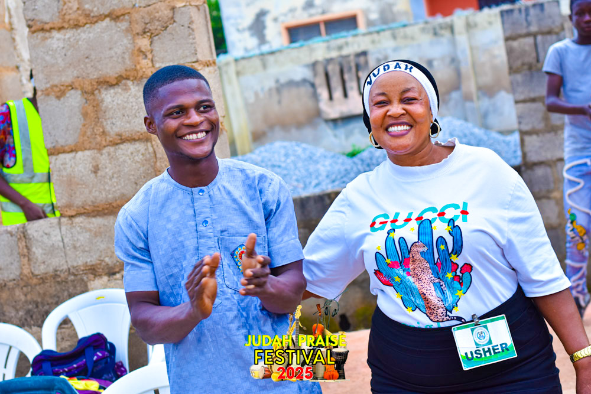
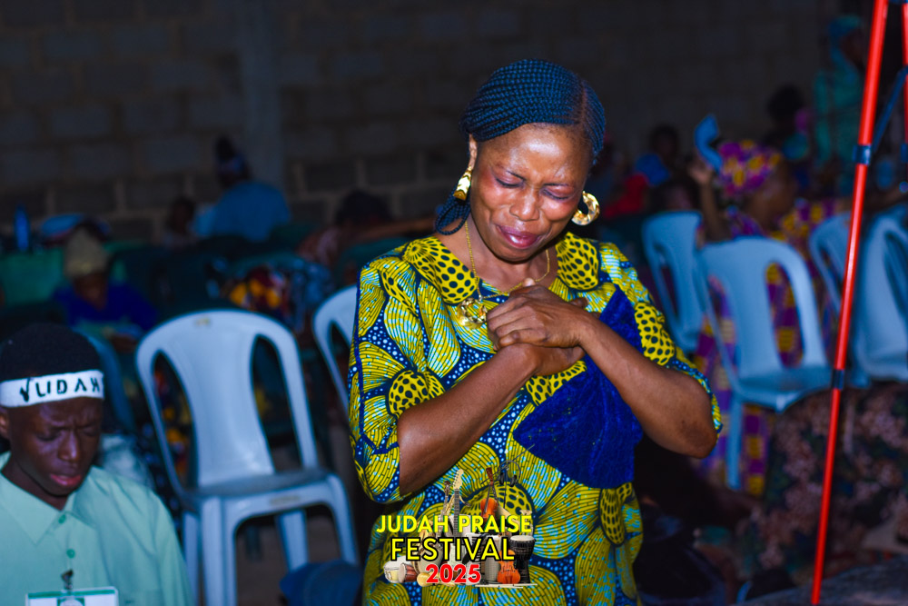
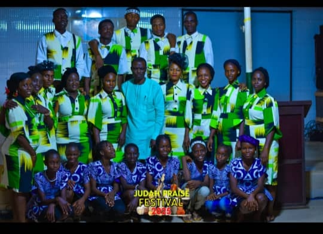

Explore the ministries and groups of Kingdom Citizens Church International, each designed to nurture faith, service, and excellence in the body of Christ.
Pastoral Group
Pastor Sam Balogun
Founder & Senior Pastor, guiding the Church with divine wisdom and passion for the Kingdom.

Pastor Mrs Felicia Balogun
Co-founder, nurturing believers and strengthening families through love and guidance.

Pastor Wale Somoye
Resident Pastor, leading the Osara branch and mentoring the congregation faithfully.

Pastor Peter Oluwakunbi
Youth Pastor, equipping young believers to walk boldly in their God-given destiny.

Evangelist Daniel Onaleye
Head of Choir & Evangelist, inspiring worship and guiding evangelistic missions.
Children's Department
Our Children's church is geared towards raising a new generation of children that will fear God and love humanity...
Teenagers' Department
This unit is committed in teaching our children who are between the ages of 13-18 Years as they grow into young adults...
Youth Fellowship

This is the group of our young adults. Our main objective is to develop them in the wisdom and love of God...
Women’s Fellowship (Royal Pillars)
We are committed to the successful family life of our members...
Men’s Fellowship
This group is twofold: Business Men Fellowship and Men of Issachar...
Kingdom Citizens Voices (Choir)
We give high premium to praise and worship of God...
Ushering Group
This team maintains order within the church...
Royal Security Unit

The kingdom law-enforcement agents ensuring cars are parked orderly...
Evangelism Team
Fulfilling the Great Commission (Matt. 28:19-20)...
Burden Bearers (Prayer Group)
Dynamic individuals devoted to praying for the church, pastors, and revival...
Sanctuary Keepers & Decorators

This team keeps the church building and environment neat...
Media Unit (ICT Group)
Handles visual/audio production, publications, and internet outreach...
Prayer Centre – Home Fellowship
The church in homes: fostering pastoral relationships, extending love and care...